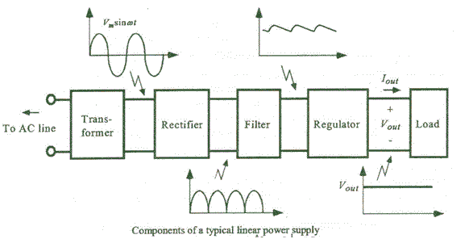
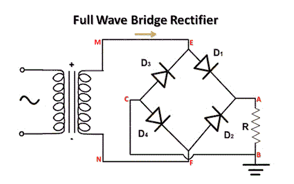
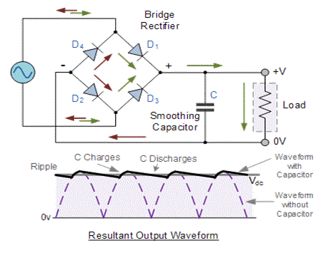
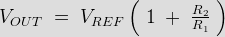
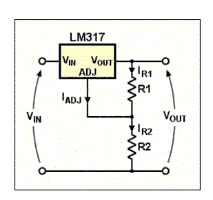
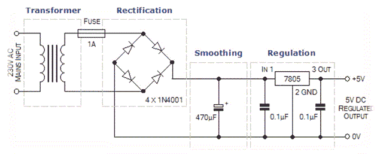

Step Down Transformer
Rectification
DC Filteration
Regulation
Application of Regulated Power Supply
Today almost every electronic device needs a dc supply for its smooth operation and they need to be operated within certain power supply limits. This required dc voltage or dc supply is derived from single phase ac mains. A regulated power supply can convert unregulated an ac (alternating electric current or voltage) to a constant dc (direct electric current or voltage). A regulated power supply is used to ensure that the output remains constant even if the input changes. A regulated DC power supply is also called as a linear power supply, it is an embedded circuit and consists of various blocks. The regulated power supply will accept an ac input and give a constant dc output. Figure below shows the block diagram of a typical regulated dc power supply.

The basic building blocks of a regulated dc power supply are as follows:
1. A step down transformer
2. A rectifier
3. A DC filter
4. A regulator
Operation of Regulated Power Supply
Step Down Transformer
A step down transformer will step down the voltage from the ac mains to the required voltage level. The turn’s ratio of the transformer is so adjusted such as to obtain the required voltage value. The output of the transformer is given as an input to the rectifier circuit.
Rectification
Rectifier is an electronic circuit consisting of diodes which carries out the rectification process. Rectification is the process of converting an alternating voltage or electric current into corresponding direct (dc) quantity. The input to a rectifier is ac whereas its output is unidirectional pulsating dc. Usually a full wave rectifier or a bridge rectifier is used to rectify both the half cycles of the ac supply (full wave rectification). Figure below shows a full wave bridge rectifier.

A bridge rectifier consists of four p-n junction diodes connected in the above shown manner. In the positive half cycle of the supply the voltage induced across the secondary of the electrical transformer i.e. VMN is positive. Therefore point E is positive with respect to F. Hence, diodes D3 and D2 are reversed biased and diodes D1 and D4 are forward biased. The diode D3 and D2 will act as open switches (practically there is some voltage drop) and diodes D1 andD4 will act as closed switches and will start conducting. Hence a rectified waveform appears at the output of the rectifier as shown in the first figure. When voltage induced in secondary i.e. VMN is negative than D3 and D2 are forward biased with the other two reversed biased and a positive voltage appears at the input of the filter.
DC Filteration
The rectified voltage from the rectifier is a pulsating dc voltage having very high ripple content. But this is not we want, we want a pure ripple free dc waveform. Hence a filter is used. Different types of filters are used such as capacitor filter, LC filter, Choke input filter, π type filter. Figure below shows a capacitor filter connected along the output of the rectifier and the resultant output waveform.

As the instantaneous voltage starts increasing the capacitor charges, it charges till the waveform reaches its peak value. When the instantaneous value starts reducing the capacitor starts discharging exponentially and slowly through the load (input of the regulator in this case). Hence, an almost constant dc value having very less ripple content is obtained.
Regulation
This is the last block in a regulated DC power supply. The output voltage or electric current will change or fluctuate when there is change in the input from ac mains or due to change in load current at the output of the regulated power supply or due to other factors like temperature changes. This problem can be eliminated by using a regulator. A regulator will maintain the output constant even when changes at the input or any other changes occur. Transistor series regulator, Fixed and variable IC regulators or a zener diode operated in the zener region can be used depending on their applications. IC’s like 78XX and 79XX are used to obtained fixed values of voltages at the output. With IC’s like LM 317 and 723 etc we can adjust the output voltage to a required constant value. Figure below shows the LM317 voltage regulator. The output voltage can be adjusted with adjusting the values of resistances R1 and R2. Usually coupling capacitors of values about 0.01µF to 10µF needs to be connected at the output and input to address input noise and output transients. Ideally the output voltage is given by

voltage regulator" width="309" height="291" class="aligncenter size-full wp-image-10284" />
Figure below shows the complete circuit of a regulated +5V DC power supply using transformer, bridge rectifier, filter (smoothing) and a fixed +5 V voltage regulator.
Here we can use IC 7803(for 3V),7809(for 9 V),7812(for 12V) etc.

Application of Regulated Power Supply
Regulated power supply is the main component of electrical,electronics and as well as automation equipment. Mobile phone charger, oscilator, amplifier are needed the regulated power supply
 by
by